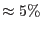

XMM-Newton Science Analysis System
omfchain (omfchain-1.42.6) [xmmsas_20170112_1337-16.0.0]
A flat-field file required by the Fast chain. It was originally envisaged that
flat-filed images, generally obtained during spacecraft slews or periods when
the OM is inactive, would be stored in an archive. This was intended, partly to
monitor the evolution of the detector response and also to allow users to
accumulate a statistically good flat-field from flats taken close in time to
their observations. However, for a number of reasons this has so far proved
unnecessary and a single OM flat-field is to be stored as a component of an OM
Calibration File (OM_PIXTOPIXSENS). Due to the complexity of analysing the OM
flat-field, at the current time the stored flat is a unit image (which is a
reasonable approximation to ). This will be superceded by a `real'
flat once better understanding of the flat-field variations and the gross
response are attained.
At present a warning will be issued noting that a template (i.e. a unit
flat-field) is being used. This flat-field is created automatically within
omfchain.
XMM-Newton SOC/SSC -- 2017-01-12